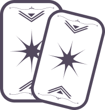
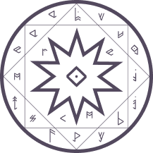
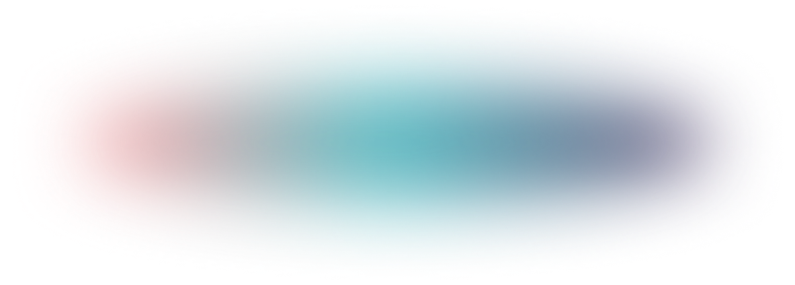
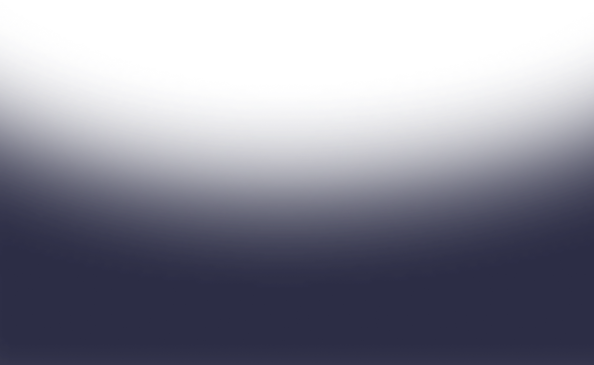

현상황 파악
놓친 부분까지 정확한 확인
문제의 본질 짚어내기


오늘, 당신을 위한 한 장의 메시지

별과 카드가 전하는 내일의 길잡이


삶의 시련 속에서 찾은 작은 위로
타로는 저에게 길을 보여준 빛이었습니다
이제 그 빛을 여러분과 나누고 싶습니다
시커님들과 안온한 마음을 향해 함께 나아가는 타로리더 쵸묘 입니다.
“따스한 말과 날카로운 통찰력으로 여러분들의 길을 선명히 밝혀드립니다”
놓친 부분까지 정확한 확인
문제의 본질 짚어내기
30종 이상의 카드덱 활용
고민에 딱 맞는 해석 제공
단순 점사가 아닌 깊은 대화
마음의 치유와 성장
미래 예측이 목적이 아님
내담자의 원하는 길로
이어지도록 해결책 제시

22장의 메이저 + 56장의 마이너 카드로
구성된 대표 점술. 심리, 예언 등
다양한 질문에 답을 얻을 수 있음.
키워드가 명확하고 배열법이
다양해 현실적이고 객관적인 상황 파악에 특화.
타로와 함께 쓰면 미래 해석이 더 디테일해짐.
천체의 움직임과 별자리, 행성의 흐름을 통해
개인의 기질·인생의 흐름·국운까지 파악하는 학문.

고대 문자 룬을 사용. 각 문자가 신성한 상징과 힘을 지니며,
현재 상황 인식과 앞으로의 방향성에 대한 조언을 줌.



쵸묘타로가 그여정에 따뜻한 빛이 되어드리겠습니다